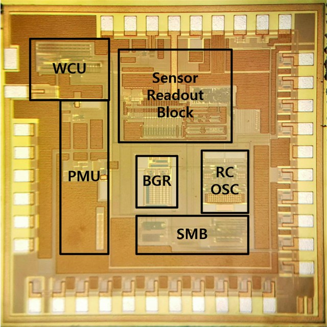

발진기 · 타이머 Oscillator & Timer
크리스털 없이 칩 안의 저항과 커패시터만으로 클럭을 만듭니다.
- 주파수 오차 보상 루프를 쓴 RC 발진기
- RC 발진기의 잡음 해석
- 온도에 따른 주파수 변화 보상
- 9.6 nW 웨이크업 타이머


ADC · PLL Data Converter & Clock Generation
아날로그 전압을 숫자로 바꾸는 회로와, 필요한 주파수의 클럭을 만드는 회로입니다.
- SAR ADC 커패시터 DAC 배열을 바꿔 기생 · 부정합 영향을 줄임
- PLL 10 MHz ~ 3.2 GHz 동작
- CDR 디지털 합성으로 만든 quarter-rate CDR
- 온도 센서 BJT–MOS 혼합 구조 (공동 연구)


센서 인터페이스 Sensor Interface System
센서의 작은 전류를 읽어 디지털 값으로 내보내는 칩입니다. 전원 · 발진기 · ADC · 통신 회로가 한 칩에 들어갑니다.
- 스마트 콘택트렌즈 IC 포도당 측정용. 무선 전력 전송, 433 MHz 무선 통신
- 가스 센서 인터페이스 IC BLE 칩과 묶어 무선 가스 측정 시스템 구현. 스타트업 노드톡스의 제품에 적용





학부생 칩 설계 Undergraduate Chip Design
겨울방학 4주 회로 설계 교육을 마친 학부생이 내 칩(MyChip) 제작 서비스로 칩을 만들어 직접 측정합니다.
- 2024 발진기
- 2025 ADC
- 2026 승압 DC-DC 컨버터. 4학년 3명이 설계 · 측정 (1 V 입력 → 약 4 V 출력), 제2회 내 칩 경진대회 본선


진행 중인 연구
학생별 주제는 People, 논문 목록은 Publication 에 있습니다. · [1] D. H. Keum et al., Science Advances, 2020. [Link]
HICS Lab, Dept. of Semiconductor System Engineering, Sejong University · Last updated : 2026. 11.